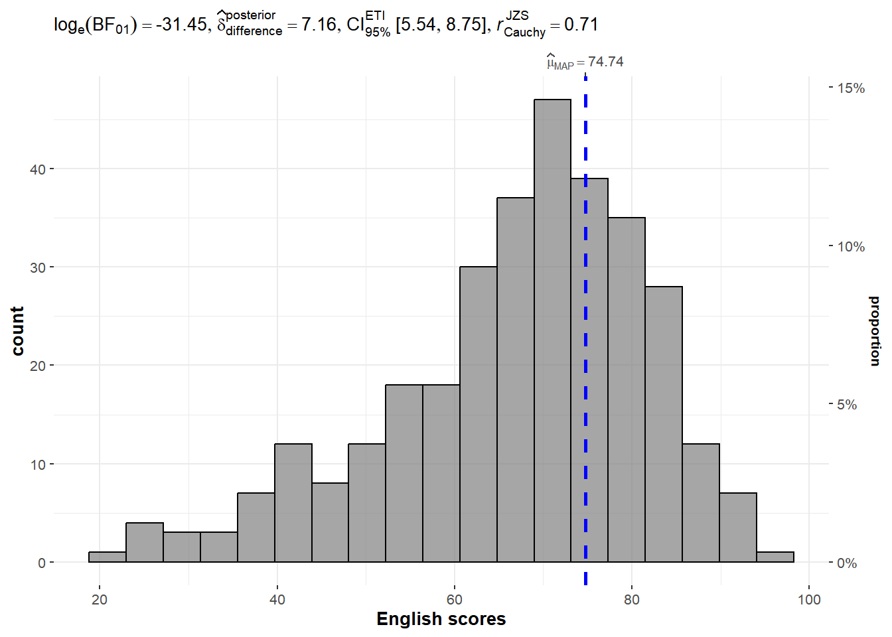
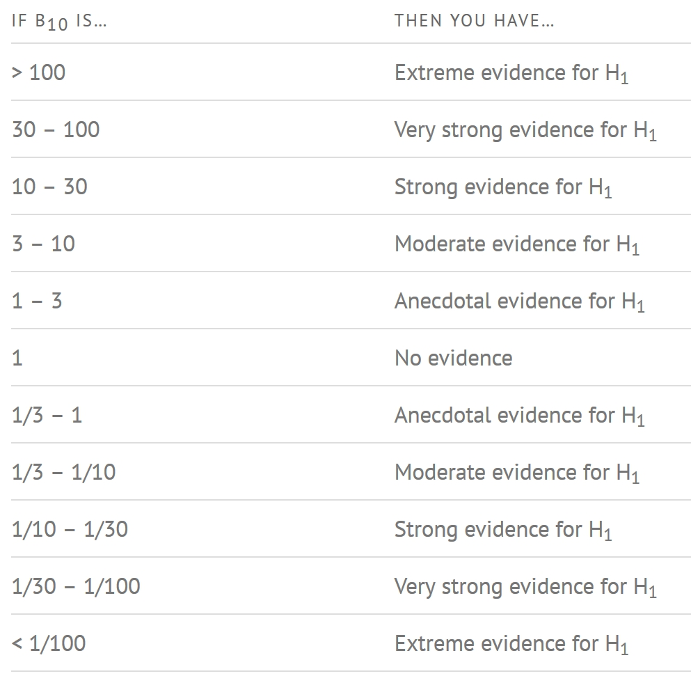
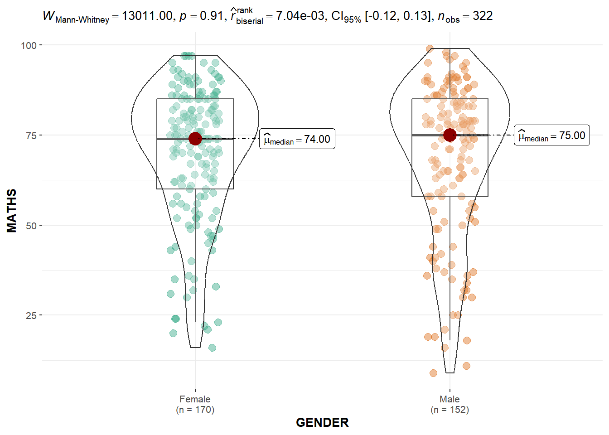
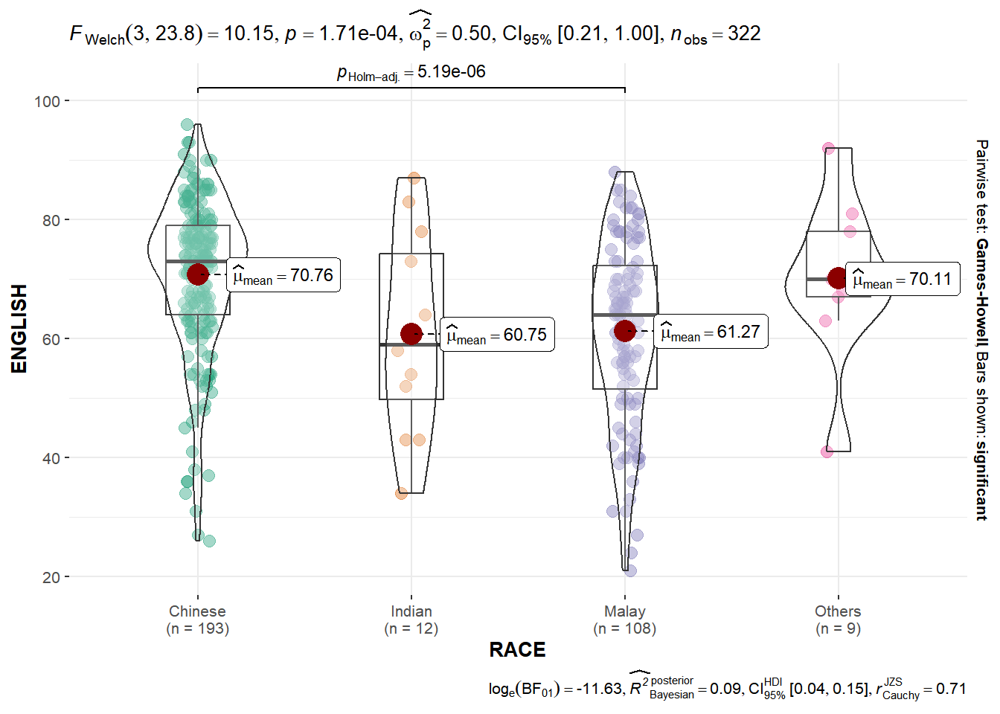
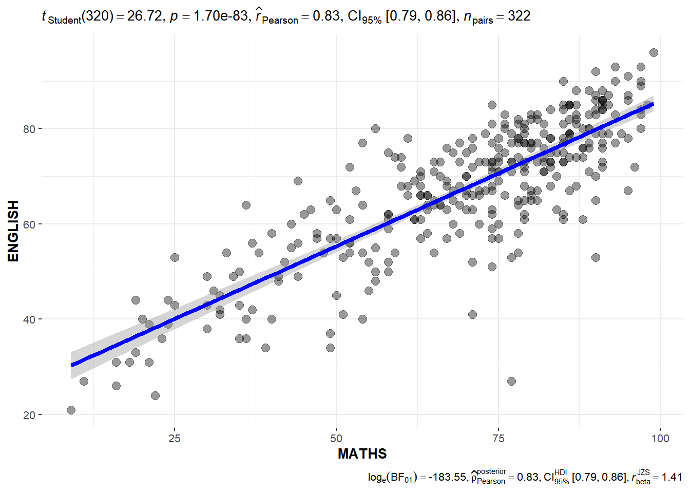
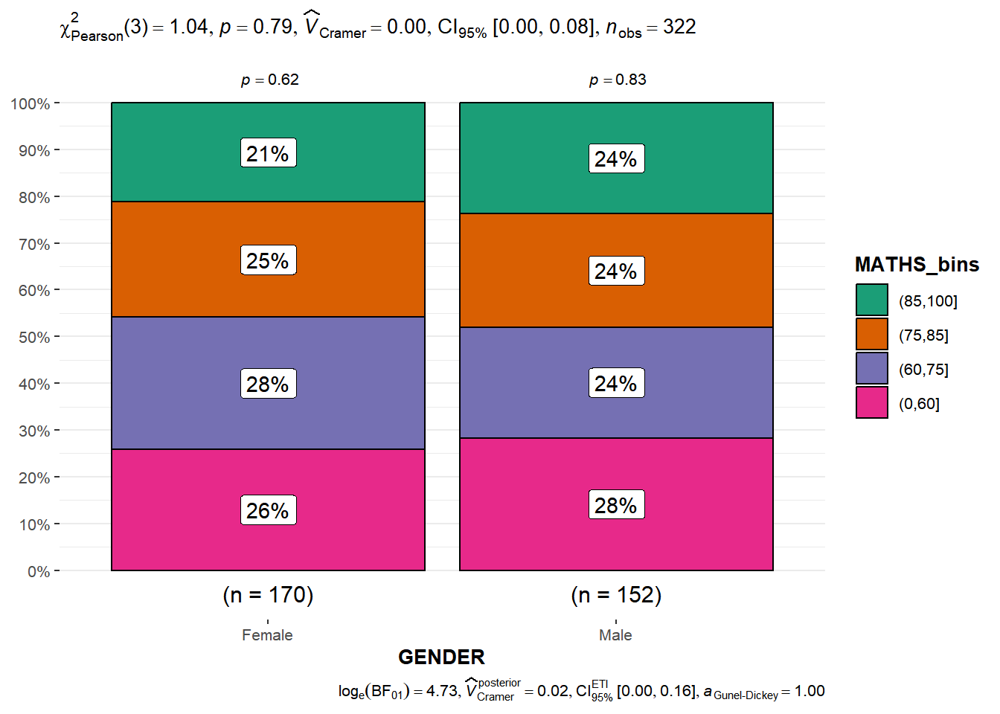

Show code
pacman::p_load(ggstatsplot, tidyverse)In this hands-on exercise, the following will be covered:
ggstatsplot  is an extension of ggplot2 package for creating graphics with details from statistical tests included in the information-rich plots themselves. Such details include: - Providing alternative statistical inference methods by default. - Following best practices for statistical reporting. For all statistical tests reported in the plots, the default template abides by the APA gold standard for statistical reporting.
is an extension of ggplot2 package for creating graphics with details from statistical tests included in the information-rich plots themselves. Such details include: - Providing alternative statistical inference methods by default. - Following best practices for statistical reporting. For all statistical tests reported in the plots, the default template abides by the APA gold standard for statistical reporting.

In this exercise, ggstatsplot and tidyverse will be used.
pacman::p_load(ggstatsplot, tidyverse)Importing Exam-csv data by using read_csv().
exam <- read_csv("data/Exam_data.csv")
library(knitr)
kable(head(exam, 10))| ID | CLASS | GENDER | RACE | ENGLISH | MATHS | SCIENCE |
|---|---|---|---|---|---|---|
| Student321 | 3I | Male | Malay | 21 | 9 | 15 |
| Student305 | 3I | Female | Malay | 24 | 22 | 16 |
| Student289 | 3H | Male | Chinese | 26 | 16 | 16 |
| Student227 | 3F | Male | Chinese | 27 | 77 | 31 |
| Student318 | 3I | Male | Malay | 27 | 11 | 25 |
| Student306 | 3I | Female | Malay | 31 | 16 | 16 |
| Student313 | 3I | Male | Chinese | 31 | 21 | 25 |
| Student316 | 3I | Male | Malay | 31 | 18 | 27 |
| Student312 | 3I | Male | Malay | 33 | 19 | 15 |
| Student297 | 3H | Male | Indian | 34 | 49 | 37 |
In the code chunk below, gghistostats() is used to build an visual of one-sample test on English scores.
set.seed(1234)
gghistostats(
data = exam,
x = ENGLISH,
type = "bayes",
test.value = 60,
xlab = "English scores"
)
A Bayes factor is the ratio of the likelihood of one particular hypothesis to the likelihood of another. It can be interpreted as a measure of the strength of evidence in favour of one theory among two competing theories.
That is because the Bayes factor gives us a way to evaluate the data in favour of a null hypothesis, and to use external information to do so. It tells us what the weight of the evidence is in favour of a given hypothesis.
When we are comparing two hypotheses, H1 (the alternate hypothesis) and H0 (the null hypothesis), the Bayes factor is often written as B10. It can be defined mathematically as:

A Bayes Factor can be any positive number. One of the most common interpretation is this: First proposed by Harold Jeffereys (1961) and slightly modified by Lee and Wagemakers in 2013.

In the code chunk below, ggbetweenstats() is used to build a visual for two-sample mean test of Maths scores by gender.
ggbetweenstats(
data = exam,
x = GENDER,
y = MATHS,
type = "np",
message = FALSE
)
In the code chunk below, ggbetweenstats() is used to build a visual for One-way ANOVA test on English scores by Race.
ggbetweenstats(
data = exam,
x = RACE,
y = ENGLISH,
type = "p",
mean.ci = TRUE,
pariwise.comparisons = TRUE,
pairwise.display = "s",
p.adjust.methods = "fdr",
message = FALSE
)


In the code chunk below, ggscatterstats() is used to build a visual for Significant Test of Correlation between Maths scores and English scores.
ggscatterstats(
data = exam,
x = MATHS,
y = ENGLISH,
marginal = FALSE
)
In the code chunk below, the Maths scores are binned into a 4-class variable width by using cut()
exam1 <- exam %>%
mutate(MATHS_bins =
cut(MATHS,
breaks = c(0,60,75,85,100)))And the code chunt below uses ggbarstats() to build a visual for Significant Test of Association.
ggbarstats(exam1,
x = MATHS_bins,
y = GENDER)